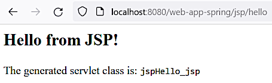
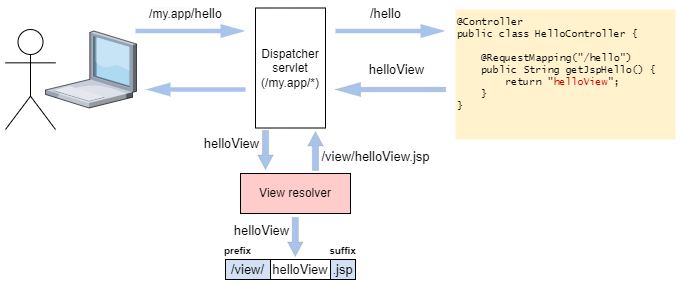

View resolver
View resolver
View resolver
Mar 20, 2023
[1.8]
Now we create a new controller JspHelloController:
@Controller
@RequestMapping("/jsp")
public class JspHelloController {
@RequestMapping("/hello")
public String getJspHello() {
return "/view/jspHello.jsp";
}
}Here we remove the @ResponseBody annotation that will instruct the Spring MVC framework that
the method return value is not the exact page content but the view file location instead.
A simple JSP file src/main/webapp/view/jspHello.jsp
is created:
<html><body>
<h2>Hello from JSP!</h2>
<p>The generated servlet class is:
<code><%= this.getClass().getSimpleName() %><code></p>
</body></html>Important
In the file web.xml
make sure that servlet mapping URL pattern is /, not /*:
. . .
<servlet-mapping>
<servlet-name>front-controller</servlet-name>
<url-pattern>/</url-pattern>
</servlet-mapping>
. . .Otherwise the Jetty server shows error 404 in the browser and puts the following error in the log:
Mar 20, 2023 11:05:12 AM org.springframework.web.servlet.DispatcherServlet noHandlerFound
WARNING: No mapping for GET /web-app-spring/view/jspHello.jspAfter navigating to http://localhost:8080/web-app-spring/jsp/hello we see:

This approach doesn't use the standard Spring MVC view resolution mechanism. The view location is hard coded in the controller and reflects in the page URL. If, for any reason, the view file location is changed it will need corresponding changes in different parts of the code. Also we are tied to (in this case) to the JSP technology and it will need a lot of work to switch to the other ones.
Note
JSP pages are processed by the Jetty jsp module added when the server was initially adjusted.
If the file %JETTY_BASE%\start.d\jsp.ini is removed the following error will be logged when
a JSP page is accessed:
2023-03-20 12:28:26.293:INFO:oejshC.web_app_spring:qtp2101842856-13: No JSP support. Check that JSP jars are in lib/jsp and that the JSP option has been specified to start.jarGit commit:
a48ebdb4100ae75236cc2165d4e50b417d1a48a5specifying direct view file location
The main idea may be described like this: we have a view file location, e.g. /view/helloView.jsp,
but the controller method returns just an internal part of this location or a base name,
like helloView.

The view resolver prepends and appends the base name with the prefix and the suffix and returns the full view location.
In Spring MVC the view resolver class is
org.springframework.web.servlet.view.InternalResourceViewResolver.
So in the dispatcher servlet configuration file front-controller-servlet.xml
we add the following bean:
. . .
<bean class="org.springframework.web.servlet.view.InternalResourceViewResolver">
<property name="prefix" value="/view/"/>
<property name="suffix" value=".jsp"/>
</bean>
. . .And in the controller JspHelloController
we change the return value from /view/jspHello.jsp to jspHello:
. . .
@RequestMapping("/hello")
public String getJspHello() {
return "jspHello";
}
. . .After that, navigating to http://localhost:8080/web-app-spring/jsp/hello gives the same result.
But now if the view directory changes it will require readjustment in only one place.
Git commit:
d33bc3c9d1ee706a12b84acf3332e9c899325c59view resolver introduced